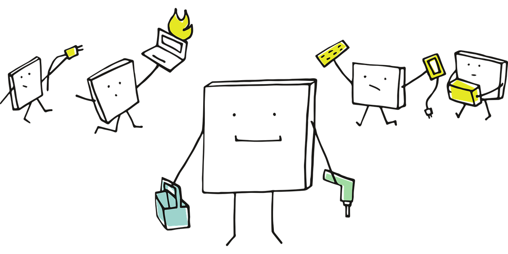
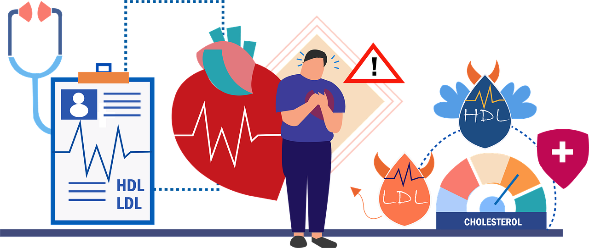

Appendix B — Simulated Datasets
While we have made an effort to include real datasets wherever possible in this mini-book, we will utilize simulated data to demonstrate the application of the test workflow from Chapter 1 for certain hypothesis testings. This simulation-based approach allows us to have suitable datasets to illustrate how each test’s modelling assumptions must be satisfied to ensure that we deliver robust inferential conclusions to our stakeholders. Therefore, this appendix will explain the generative modelling process used to create these simulated datasets.

Heads-up on the language chosen to simulate the datasets in the mini-book’s main chapters!
To maintain a bilingual approach using both R and Python, we will provide the code for generating the datasets in both languages within this appendix. However, in the main chapters, we will rely on the data points from the R-generated set while conducting the inferential analysis using both programming languages. This decision is made because there is a discrepancy between the datasets simulated by the two languages, even when using the same simulation seed, due to their distinct pseudo-random number generators.
For each of the datasets listed below, besides providing the simulation code, we will elaborate on the dataset context along with the relevant equations (if necessary) that generate this data.
B.1 \(t\)-test for Paired Samples Dataset
This dataset is used in Chapter 3, more specifically in Section 3.4, to demonstrate the \(t\)-test for paired samples via a hypothetical scenario from medical research. Consider a clinical investigation examining whether an innovative medication can decrease low-density lipoprotein (LDL) cholesterol levels in adults diagnosed with hypercholesterolemia, a condition characterized by elevated cholesterol levels in the blood. This matter can increase the risk of heart problems because cholesterol can build up in blood vessels and block blood flow.

Heads-up on the use of this dataset!
This data is simulated and by no means should be considered for medical research or advice.
This simulated study monitors a group of \(n = 120\) participants over time, recording LDL cholesterol concentrations prior to treatment and again after an eight-week course of the drug. The outcome of interest is the LDL cholesterol measurement (in \(\text{mg/dL}\)), a widely used biomarker for cardiovascular risk. Since each participant provides two observations (i.e., one before and one after treatment), the data are naturally paired (the same individual is measured twice), allowing the analysis to focus on changes within individuals rather than differences between unrelated groups.
B.1.1 Generative Modelling Process
The simulated dataset reflects the following study characteristics:
- Baseline LDL levels: Participants in the simulated population have a mean pre-treatment LDL cholesterol level of \(\mu = 160 \text{ mg/dL}\), with a standard deviation of \(\sigma = 5 \text{ mg/dL}\) to account for individual variation.
- Expected treatment effect: On average, in this simulated population of participants, LDL cholesterol levels decline by \(\Delta = 2.5 \text{ mg/dL}\) after the intervention using the new medication.
- Measurement variation: Biological variability and measurement error introduce random fluctuations in LDL values, even within the same patient.
Since formally, for the \(i\)th participant, the LDL cholesterol level before treatment is assumed to follow a Normal distribution with \(\mu = 160 \text{ mg/dL}\) and \(\sigma = 5 \text{ mg/dL}\), we can express the following:
\[\text{LDL}_{\text{before}, i} \sim \text{Normal}(\mu = 160, \sigma^2= 5^2).\]
Then, again for the \(i\)th participant, the LDL cholesterol level after the treatment is another random variable that is a combination of three components as follows:
\[\text{LDL}_{\text{after}, i} = \text{LDL}_{\text{before}, i} - \Delta + \varepsilon_i,\]
where:
- \(\Delta = 2.5 \text{ mg/dL}\) is the average decrease in LDL cholesterol level due to this new treatment in the simulated population.
- \(\varepsilon_i \sim \text{Normal}(0, 1)\) represents additional variation specific to the after-treatment measurement for the \(i\)th participant. This is what we already defined as the measurement variation.
B.1.2 Code
Let us check the corresponding code to simulate this data. We are simulating 120 participants in this study, which gives us a sample size of \(n = 120\). Additionally, the simulation will utilize the {numpy} (Harris et al. 2020) and {pandas} libraries in Python. The final data frame will be stored in cholesterol_data, which will have the following columns: patient_id, LDL_before, and LDL_after.
# Set seed for reproducibility
set.seed(123)
# Set number of participants
n_patients <- 120
# Set the average decrease in LDL cholesterol levels due to new treatment
Delta <- 2.5
# Step 1: Generate LDL cholesterol levels before treatment
ldl_before <- rnorm(n_patients, mean = 160, sd = 5)
# Step 2: Generate LDL cholesterol levels after treatment
ldl_after <- ldl_before - Delta + rnorm(n_patients, mean = 0, sd = 1)
# Create final dataset
cholesterol_data <- data.frame(
patient_id = 1:n_patients,
LDL_before = round(ldl_before, 1),
LDL_after = round(ldl_after, 1)
)
# Showing the first 20 participants
head(cholesterol_data, 20)# Importing libraries
import numpy as np
import pandas as pd
# Set seed for reproducibility
np.random.seed(123)
# Set number of participants
n_patients = 120
# Set the average decrease in LDL cholesterol levels due to new treatment
Delta = 2.5
# Step 1: Generate LDL cholesterol levels before treatment
ldl_before = np.random.normal(loc=160, scale=5, size=n_patients)
# Step 2: Generate LDL cholesterol levels after treatment
ldl_after = ldl_before - Delta + np.random.normal(loc=0, scale=1, size=n_patients)
# Create final dataset
cholesterol_data = pd.DataFrame({
"patient_id": np.arange(1, n_patients + 1),
"LDL_before": np.round(ldl_before, 1),
"LDL_after": np.round(ldl_after, 1)
})
# Showing the first 20 participants
print(cholesterol_data.head(20))B.2 ANOVA Dataset
This dataset is used in Chapter 4 to elaborate on analysis of variance (ANOVA) and pertains to an experimental context. Suppose a data-driven marketing team at a well-known tech company, which operates a global online store, is conducting an A/B/n testing aimed at increasing the customer conversion score (i.e., the outcome). In this experiment, the customer conversion score is defined as a unitless and standardized engagement index. This index combines various elements, such as clicks, time spent on the webpage, and the probability of making a purchase, with a baseline mean set at \(50\). This score measures customer responsiveness on the online store: the higher the score, the greater the customer responsiveness.

B.2.1 Generative Modelling Process
The experiment has the following controllable factors by the experimenter:
- Webpage design: Three different layouts \(D_1\) (the current layout), \(D_2\) (a new layout), and \(D_3\) (another new layout). This makes a three-level factor.
- Discount framing: \(\text{Low}\) (i.e., “Save 10% today”) or \(\text{High}\) (i.e., “Save up to 40% today”). This makes a two-level factor.
This study will be a full factorial experiment characterized by the following elements:
- Two factors: webpage design and discount framing.
- There are \(3 \times 2 = 6\) treatments (i.e., six different combinations of all the factor levels), which classifies this study as A/B/n testing.
- We will simulate 200 customers (i.e., replicates) per treatment in our final dataset.
- The outcome variable \(Y\) is the customer conversion score, which has been previously explained.
Our data structure will be an additive model conceptually depicted as:
\[ \begin{align*} \text{Outcome} &= \text{First Main Effect} + \text{Second Main Effect} + \\ & \qquad \text{Interaction Effect} + \text{Random Error}. \end{align*} \tag{B.1}\]
Then, for the data generation process, let \(Y_{i,j,k}\) represent the customer conversion score for the \(k\)th replicate of the treatment related to the \(i\)th webpage design and the \(j\)th discount framing levels. Equation B.1 is translated as:
\[ Y_{i,j,k} = \alpha_i + \beta_j + (\alpha \beta)_{i,j} + \varepsilon_{i,j,k}, \tag{B.2}\]
where
- \(\alpha_i\) is the fixed first main effect corresponding to the \(i\)th level of webpage design for \(i = D_1, D_2, D_3\);
- \(\beta_j\) is the second fixed main effect corresponding to the \(j\)th level of discount framing for \(j = \text{Low}, \text{High}\);
- \((\alpha \beta)_{i,j}\) is the fixed interaction effect between the \(i\)th and \(j\)th levels of webpage design and discount framing respectively, and
- \(\varepsilon_{i,j,k}\) is the random error associated to each \(Y_{i,j,k}\), capturing the variability and measurement error that introduces randomness in the response \(Y_{i,j,k}\).
Heads-up on the mathematical representation of the interaction term!
The \((\alpha \beta)_{i,j}\) in Equation B.2 does not indicate that the main effects are multiplying each other. Mathematically, it is just another additive term on the right-hand side of the equation.
In this case, Equation B.2 is breaking down the outcome on the right-hand side into four additive components, which form the basis on how ANOVA models the data. With the exception of the random error \(\varepsilon_{i,j,k}\), the other three terms are assumed to be fixed within the data-generating process, given that we are using a frequentist approach. Since \(\varepsilon_{i,j,k}\) is random, we will assume that it follows a Normal distribution with a mean of \(0\) and a variance of \(\sigma^2\) (which is another fixed parameter in the simulation):
\[ \varepsilon_{i,j,k} \sim \text{Normal}(0, \sigma^2). \] In terms of our simulation, imagine you have a population of customers with the following fixed parameters:
- A vector of webpage design effects (i.e., the first main effect)
\[\boldsymbol{\alpha} = \begin{bmatrix} \alpha_{D_1} \\ \alpha_{D_2} \\ \alpha_{D_3} \end{bmatrix} = \begin{bmatrix} 40 \\ 50 \\ 70 \end{bmatrix}.\]
- A vector of discount framing effects (i.e., the second main effect)
\[\boldsymbol{\beta} = \begin{bmatrix} \alpha_{\text{Low}} \\ \alpha_{\text{High}} \end{bmatrix} = \begin{bmatrix} -5 \\ 12 \end{bmatrix}.\]
- A matrix of interaction effects, whose rows correspond to the levels of webpage design and columns to the levels of discount framing,
\[ \boldsymbol{(\alpha \beta)} = \begin{bmatrix} (\alpha \beta)_{D_1,\text{Low}} & (\alpha \beta)_{D_1,\text{High}} \\ (\alpha \beta)_{D_2,\text{Low}} & (\alpha \beta)_{D_2,\text{High}} \\ (\alpha \beta)_{D_3,\text{Low}} & (\alpha \beta)_{D_3,\text{High}} \end{bmatrix} = \begin{bmatrix} 0 & 5 \\ -8 & 0 \\ 11 & -13 \end{bmatrix}. \]
- An overall variance
\[ \sigma^2 = 16. \]
The fixed-effect interaction arrangement above induces non-parallel trends in an interaction plot, as shown in Chapter 4, while preserving additive decomposition for interpretation and statistical testing.
B.2.2 Code
Let us move to the corresponding code to simulate this data. Recall we are simulating 200 customers for each one of the six treatments, which will give us an overall sample size of \(n = 1,200\). Furthermore, note that Python additionally uses the {numpy} and {pandas} libraries. The final data frame will be stored in ABn_customer_data whose columns will be webpage_design, discount_framing, and conversion_score.
# Set seed for reproducibility
set.seed(123)
# Factor levels and sampled customers per treatment
webpage_design_levels <- c("D1", "D2", "D3")
discount_framing_levels <- c("Low", "High")
n_per_treatment <- 200
# Population fixed additive parameters
alpha <- c(40, 50, 70)
beta <- c(-5, 12)
interaction <- matrix(
c(
0, 5,
-8, 0,
11, -13
),
nrow = 3, byrow = TRUE
)
# Simulating data
data_list <- list()
for (i in 1:3) {
for (j in 1:2) {
mean_ij <- alpha[i] + beta[j] + interaction[i, j]
y <- rnorm(n_per_treatment, mean = mean_ij, sd = sqrt(16))
df_ij <- data.frame(
webpage_design = as.factor(webpage_design_levels[i]),
discount_framing = as.factor(discount_framing_levels[j]),
conversion_score = round(y, 2)
)
data_list[[length(data_list) + 1]] <- df_ij
}
}
ABn_customer_data <- do.call(rbind, data_list)
# Showing the first 100 customers of the A/B/n testing
head(ABn_customer_data, n = 100)# Importing libraries
import numpy as np
import pandas as pd
# Set seed for reproducibility
np.random.seed(123)
# Factor levels and sampled customers per treatment
webpage_design_levels = ["D1", "D2", "D3"]
discount_framing_levels = ["Low", "High"]
n_per_treatment = 200
# Population fixed additive parameters
alpha = [40, 50, 70]
beta = [-5, 12]
interaction = np.array([
[0, 5],
[-8, 0],
[11, -13]
])
# Simulating data
data_list = []
for i in range(3):
for j in range(2):
mean_ij = alpha[i] + beta[j] + interaction[i, j]
y = np.random.normal(loc=mean_ij, scale=np.sqrt(16), size = n_per_treatment)
y_rounded = np.round(y, 2)
df_ij = pd.DataFrame({
'webpage_design': [webpage_design_levels[i]] * n_per_treatment,
'discount_framing': [discount_framing_levels[j]] * n_per_treatment,
'conversion_score': y_rounded
})
data_list.append(df_ij)
# Concatenate all groups into one DataFrame
ABn_customer_data = pd.concat(data_list, ignore_index = True)
# Showing the first 100 customers of the A/B/n testing
print(ABn_customer_data.head(100))